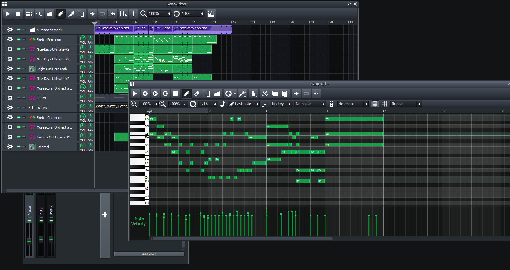

A cartoon about animal people in urban hell. Originally a one-off Christmas cartoon, this film came out almost a year after its intended release.
The grand sequel! Split into 3 parts, this series covers the adventures of XPresents' cast as they go on vacation.
Blender's Grease Pencil allows for elaborate animations with effects, inherited color palettes, etcetera. Blender has also been used for the video editing, making the animatic, and for compositing.
Many of the complex backgrounds in XPresents and Plum Palm were painted in Krita, a free and open source digital art program.
Audacity is a free sound recording/editing software.
LMMS is also a free software, and was used for producing all of the music.
Soundly provides many sound effects using several libraries on the cloud.